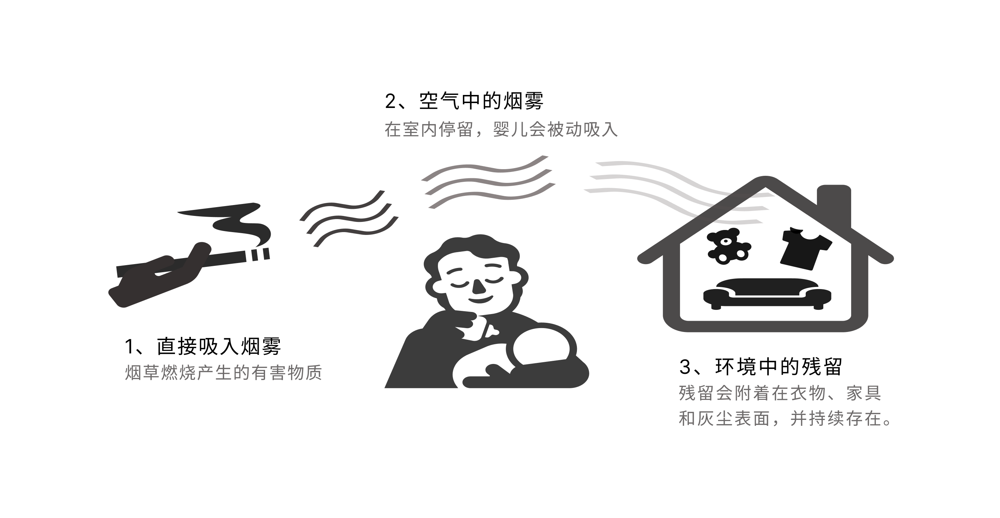

01 阳痿：一个难以启齿却真实存在的风险
吸烟对性功能的影响，很少出现在公共讨论中。人们谈起吸烟的危害，第一反应往往是肺癌、慢阻肺或者心脏病。但香港将“吸烟导致阳痿”印上烟盒后，不少人的第一反应是：这也行？
答案是：真的行。
世界卫生组织《烟草控制框架公约》的图形警示数据库中，明确收录了“Smoking causes impotence”作为标准警示语。美国卫生与公众服务部发布的《卫生局局长报告》（2014、2020）也认定：现有证据足以推断吸烟与勃起功能障碍（ED）之间存在因果关系。
一项发表于《PLoS One》的Meta分析，综合了28,586名参与者的数据，结果显示当前吸烟者发生ED的风险是非吸烟者的1.51倍。而且这种风险是“累积”的——每日吸烟量每增加10支，ED风险增加14%；吸烟年限每增加10年，风险增加15%。
吸烟量与ED风险的剂量-反应关系
每日吸烟量与勃起功能障碍（ED）发病风险的关联
所以，烟盒上没有在开玩笑。当然，ED是一个多因素疾病，糖尿病、高血压、心血管疾病、年龄及心理因素也很重要。但吸烟，正是那个你可以主动拔掉的“插头”。
02 失明：视力的黑洞，从一支烟开始
当烟盒上出现“失明”二字，很多人第一反应是：“这也能和吸烟扯上关系？”
这并非夸张。你的视网膜中央有一个叫“黄斑”的区域，负责阅读、识别人脸和驾驶等精细视力。它会因为吸烟而缓慢退化，让清晰的视界从中间一点一点被黑洞吞噬。
吸烟对致盲性眼病的多维度风险评估
控制眼睛感光细胞支持的，是一层叫作视网膜色素上皮细胞（RPE）的“后勤部队”。2026年1月，约翰·霍普金斯医学院发表在《美国国家科学院院刊》（PNAS）上的研究首次揭示：香烟烟雾不仅通过自由基直接损伤组织，还会对RPE细胞造成“表观遗传改变”——相当于给细胞的基因“上锁”，让它们失去对环境压力的应变能力，提前衰老。
研究人员发现，即使是在相当于人类“年轻成年期”的小鼠身上，急性暴露于香烟烟雾提取物后，细胞也立即出现了不可逆损伤。这让医学界的共识更加明确：吸烟会使老年性黄斑变性（AMD）的发病时间平均提前10年。
全球疾病负担（GBD 2021）数据显示，2021年全球因吸烟导致的失明和视力损伤相关伤残寿命总计高达284,030年。南亚、东南亚和北非及中东地区是吸烟致盲的“高发区”。
全球各地区吸烟导致的失明/视力损伤负担对比（2021年）
单位：每10万人伤残寿命(YLDs)
03 秃头：头顶的危机，可能与手指间的烟有关
香港卫生防护中心调查显示，香港成年男性脱发人口近25%，其中9成以上属于雄激素性秃发（AGA）。这意味着每四名成年男性中，至少有一人正在经历“头顶危机”。而在遗传基因之外，一个常被忽视的行为变量——吸烟，正被越来越多的研究证实为加速病程的帮凶。
2021年一项发表于《美容皮肤病学杂志》的横断面研究，严格纳入1000名20至35岁的健康男性，分为吸烟组与非吸烟组各500人。结果显示：吸烟组中85%的人患有不同程度的雄秃，而非吸烟组仅为40%。中重度脱发在吸烟组中占71%，非吸烟组中仅占10%。
吸烟者与不吸烟者雄秃患病率及严重程度分布对比
吸烟如何“攻击”毛囊？主要有三条机制：尼古丁导致头皮微循环障碍，毛囊缺血缺氧；烟草烟雾诱发氧化应激，缩短毛发生长期；吸烟可能增加毛囊对二氢睾酮（DHT）的敏感性，让遗传易感者更快脱发。
需要强调的是，吸烟是“独立危险因素”而非直接病因。雄秃的核心基础是遗传——有家族史的男性患者占53%至64%。吸烟不会让无遗传倾向者凭空脱发，但对于携带易感基因的人，它就是病程的“加速键”。
好消息是，戒烟或许能帮助尚未萎缩的毛囊避免进一步损伤；坏消息是，已经彻底萎缩的毛囊，很难再生。
04 婴儿猝死综合征：无声的威胁，不只在吸烟者身上
香港新规的烟盒上，还有一类疾病风险不直接由吸烟者本人承担：婴儿猝死综合征（SIDS）。
许多医学研究早已发现，孕期吸烟会显著增加婴儿猝死的风险。婴儿在出生前接触烟草，或出生后长期暴露于二手烟中，风险都会上升。而且这种影响并不只出现在重度吸烟者身上——只要怀孕期间持续吸烟，风险就会增加。
孕期吸烟行为与婴儿猝死风险的关系
和肺癌、心血管疾病不同，婴儿猝死的风险更加隐蔽。它通常发生在睡眠中，等到被注意到时，往往已经来不及了。
研究认为，烟草暴露可能影响婴儿的呼吸调节和神经反应，削弱其在缺氧等危险情况下的自主保护能力。简单来说，婴儿在睡眠中一旦出现缺氧，可能更难像平时那样及时醒来。
烟草暴露的影响也不只在孕期。出生后的二手烟暴露，以及环境中残留的烟草污染，都可能继续增加婴儿面临的风险。

所以烟盒上的这条警告并不是刻意夸大，它对应的是现有医学研究中已经较为明确的一类悲剧。
05 足部坏死：从吸烟到截肢，一条漫长的崩溃之路
烟盒上写着“吸烟导致足部坏死和截肢”——这是真的吗？
医学上，这个过程需要经过9个阶段、历时10到20年：
吸烟 → 内皮损伤 → 动脉粥样硬化 → 血管狭窄 → 间歇性跛行 → 静息痛 → 溃疡 → 坏疽 → 截肢
从吸烟到截肢的9个阶段
颜色从绿到黑表示病情加重
2014年发表于《Heart》的一项Meta分析，纳入了55项研究、超过5万名参与者，证实：当前吸烟者患外周动脉疾病（PAD）的风险，是从不吸烟者的2.71倍。PAD是足部坏死和截肢的最主要病因。当下肢动脉因粥样硬化而狭窄或闭塞，足部组织因缺血而逐渐坏死。
风险与吸烟量呈明确正相关。约翰霍普金斯大学2019年的一项大型研究发现，吸烟超过40包/年的人群，PAD风险是从不吸烟者的4倍——这一关联强度甚至超过了吸烟与冠心病或中风的关联。2024年的一项Meta分析进一步证实：每多吸1支烟/天，PAD的超额风险就增加20%。
吸烟量（包/年）与PAD风险的剂量反应曲线
将两组人群直接对比：非吸烟人群的PAD发生率约3-5%，吸烟人群则高达10-15%；吸烟者的截肢相对风险约为非吸烟者的3.5倍。
吸烟者与非吸烟者的PAD发生率及截肢风险对比
需要特别提及的是Buerger病（血栓闭塞性脉管炎）——一种与吸烟呈极强因果关系的罕见血管病，患者中93.2%有吸烟史，严重时必须截肢。
烟盒上的这句话是真实的，但它被严重简化了。从吸烟到截肢通常需要十年以上的漫长病程，轻度吸烟者与重度吸烟者的风险差异巨大，而且截肢前要经历多个可干预的中间阶段。然而，作为一条警示语，它的方向完全正确。
结尾：烟盒上的八个字，背后是几十年的医学证据
阳痿、失明、秃头、婴儿猝死、足部坏死……这些触目惊心的词语，如今被印在了香港的烟盒上。它们不是耸人听闻的标语，而是全球数十年流行病学、毒理学和临床研究凝聚而成的结论。
当然，每一句话都被简化了——它省略了剂量、时间线、个体差异和复杂病因。但常识告诉我们：烟盒没有空间写下一整篇论文。它的使命是敲响警钟，而不是撰写病历。
如果你吸烟，这些警示语不是在吓唬你，而是在告诉你一件被大量证据证实的事情：你的身体正在为每一口烟付出代价，有些代价，比你想象的要来得更早、更隐秘、更不可逆。
而如果你不吸烟，这些文字或许能帮你理解：为什么世界各地的控烟政策越来越严，为什么烟盒上的图片越来越让人不安——因为真相本身，就足够令人不适。
*参考资料：世界卫生组织烟草警示数据库、美国卫生局局长报告（2014/2020）、Cao et al. (PLoS One, 2013; J Sex Med, 2014)、约翰·霍普金斯医学院 PNAS 2026、GBD 2021 (BMC Public Health 2025)、Journal of Cosmetic Dermatology 2021、Lu et al. (Heart 2014)、Johns Hopkins研究 (JACC 2019)、PLoS ONE 2024、Sasaki et al. (J Vasc Surg 1999) 等。*